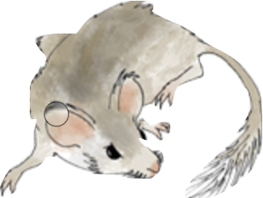

Percent Abundance

Range Mapper Range Mapper was created by Adrian George, Sydney Widell, Rob Roth, and Jack Williams at the University of Wisconsin-Madison Geography Department and Cartography Lab. The dynamic visualizations are based on fossil pollen recovered from lake and bog sediments going back to the last Ice Age. Data were obtained from the Neotoma Paleoecology Database and its constituent databases: the North American Pollen Database, the European Pollen Database and Alpine Pollen Database, and the Indo-Pacific Pollen Database. The work of data contributors, data stewards, and the Neotoma community is gratefully acknowledged. Ice sheet data is from Dalton et al (2020) and Hughes et al (2016) - see full citations below. This work would not have been possible without funding support from NSF (Grant EAR-1550707), the University of Wisconsin–Madison Graduate School, and the Minnie Riess Detling Trust.
Code Source: To view our code and make your own maps using data from the Neotoma Paleoecology Database, visit our GitHub repository.
Citation: If you use Range Mapper in a paper, please contact Adrian George for citation information, because the Range Mapper paper is currently in review.
Ice Sheet Citations: Dalton, A.S., Margold, M., Stokes, C.R., Tarasov, L., Dyke, A.S., Adams, R.S., Allard, S., Arends, H.E., Atkinson, N., Attig, J.W., et al. (2020). An updated radiocarbon-based ice margin chronology for the last deglaciation of the North American Ice Sheet Complex. Quaternary Science Reviews 234, 106223.
Hughes, A.L.C., Gyllencreutz, R., Lohne, Ø.S., Mangerud, J., and Svendsen, J.I. (2016). The last Eurasian ice sheets – a chronological database and time-slice reconstruction, DATED-1. Boreas 45, 1–45.